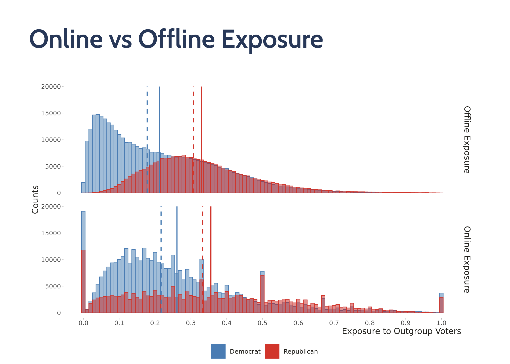

PPOL 5203 - Data Science I: Foundations
Week 2: Version Control, Workflow and Reproducibility: Or a bit of Git & GitHub
Announcements
Sierra Office Hours
- In person: Wednesdays, 12:30 to 1:30 pm
- Virtual: Thursday, 1:00pm to 2:00 pm
This is our classroom
- I will get some power cords
Plans for Today
Best Practices for Data Science Workflow and Reproducibility
Version Control
- Intro to commandline
- Git
- Github
In-Class Exercise
Your first homework
this lecture draws on materials from Simon Munzert Intro to Data Science + previous iterations of PPOL 5203.
Workflow and Reproducibility
That’s what we generally look for as data scientists
But we often don’t teach students how to organize the mess behind it.
We often assume we are capable of keeping track our own work

But this assumption will set you up to fail
As you advance on your career as a data scientist:
Your projects will grow.
You will start collaborating with other colleagues (DS is fundamentally collaborative)
You will juggle through multiple project from now and from the past!
Project will come and go.
You will re-use code A LOT!
You need to set up a system to keep track of you work (not you! the system!)
Reproducibility
Reproducibility is fundamental to the scientific method but also a practical reality
Think about your projects as self-contained project that need to be:
fully replicated by others (that’s science)
replicable by you (that’s the practical reality)
Best Practices
Self Contained Projects
Documentation
Readability
Naming
Portability
Version Control
Self-Contained Projects
Always consider your work in terms of projects.
A project is a self-contained unit of data science work that can be shared and replicated
A self-contained project has:
- content: data, code, outputs, literature, text
- metadata: readme for the project and each folder, information about the tools you are running
Example of Project Setup
├── /data
│ ├── /raw
│ ├── /processed
├── /docs
├── /code
| |── 01_clean_xxx.py
| |── 01_analysis_xxx.py
├── /literature
├── /output
│ ├── /tables
│ ├── /figures
├── /misc
└── readme.txt Documentation
Use # to describe every single step of your code
def distance_tree(geom, geo_neigh, n):
""""
function to calculate the closest point and get their index using scipy
geom: geo pandas data frame with the reference points
geo_neigh: geo pandas data frame the neighbors location point
n: str, number of closest neighboors
"""
# convert geometries to numpy
n_geom = np.array(list(geom.geometry.apply(lambda x: (x.x, x.y))))
n_geo_neigh = np.array(list(geo_neigh.geometry.apply(lambda x: (x.x, x.y))))
# estimate the trees
btree = cKDTree(n_geo_neigh) # btreee neighbors
# captures distances and indexes
dist, idx = btree.query(n_geom, n)vs
def distance_tree(geom, geo_neigh, n):
n_geom = np.array(list(geom.geometry.apply(lambda x: (x.x, x.y))))
n_geo_neigh = np.array(list(geo_neigh.geometry.apply(lambda x: (x.x, x.y))))
btree = cKDTree(n_geo_neigh)
dist, idx = btree.query(n_geom, n)Readability
Make you code readable in plain english. This usually mean giving names to your variables and functions that fully describe what your intents are.
Avoid:
- Abbreviation
- Generic Names
- Misleading names
Naming
Use meaningful names for your code/data/notebooks.
File names should be meaningful
DO NOT USE SPACES. Use snake case (_) style for you files and code
data analysis 2.py→data_analysis_2.py
model_analysis.py→model_analysis_het_treatment_effects_main_paper.py
Portability
Use computational environments for your projects. (pyenv or conda)
Avoid absolute file paths
- Good Examples: “preprocessing.py” “figures/model-1.png” ” /data/survey.csv”
- Terrible examples: “/Users/me/ppol5203/data.csv” - only exists in your machine!!!
Version Control
Why version control (in theory)?

Why version control (in practice)?
Easily handle collaboration (contribute to other people’s work)
Allows you to “rewind the tape” to earlier incarnations of your notes, drafts, papers and code
It is like Microsoft Word track changes but for your entire project
Allows you to review, comment, and analyze other people’s codes
Heavily adopted in the industry
What is version control?
Version control is a system that records changes to a file or set of files over time so that you can recall specific versions later. (pro git)
Git: one of many options for version control in data science. Distributed system
Github: is a public remote host for Git repositories. A web-based platform to store git repos
- It has much more features, for example, git hub actions, pages, pull and push. we will go through some today
TLDR: you will git locally, and share and collaborate with others using Github.
Crucial to realize those are different!
CommandLine
Git is a commandline tool. To use git in your computer, you will need to access the commandline.
The command line (CLI) is a program that allows you to interact directly with your operating system.
If you’re on a Mac a unix command line comes installed on your machine
If you’re on a Windows machine, you have a few different options for commandline, and not all are unix-based
How will we use CLI?
- Run git
- Understand file paths on your computer
- Run scripts from the commandline
- Open notebook and interact with other programs
- Set up cluster computing.
Basic Commands
Where am I?
pwdHow do I make a new directory with name foldername?
mkdir foldernameHow do I navigate to folder foldername?
cd foldernameI’m lost; how do I get back to the home directory?
cd ~What files and directories are in this directory?
lsHow do I navigate “up one level” in the dir structure?
cd ..More Commands
How do I create a file?
touch <file name>
# or
vim <file name>How do I move files?
mv <old path> <new path>How do I see a file?
cat <file name>How do I ask for help>
man lsVersion Control in Theory
Key concepts in git:
Git: snapshot + distributed VCS
Three stages of git
Time travel
Remotes with Github
Git: a distributed version control system
- This is the git system.
- it is distributed.
- Exists in your local machine
Source: pro git
The three stages of Git

Time travel in Git

Github (Remote Git Repositories)

Git in Practice
Create your first repository
Create an empty directory to be our git walkthrough
# check where you are
pwd
# create dir
mkdir gitwalkthrough
# change cd
cd gitwalkthroughCheck if you have a git
git statusStart a repository
git initTracking and staging new files: make any changes you want, then stage
git add <file name>First commit
git commit -m "add a tag"Git in Practice II: Time Travel
Returning to a previous snapshot:
Make more changes
git add . track and stage
git commit -m 'second commit' *second commitCheck your log
git logTime travel with checkout
git checkout <hash> #to move to a past different snapshotCheck your directory
lsGit Branching
Branching allows us to work on different paths in Git. It is very useful for two purposes:
Experimenting with code
Collaborating with colleagues.
Visualize with Visualize Git tool
Git Branching in Practice
Create a new branch
git checkout -b <branch-name>Write code or create new files
vim test4.txtStage and commit
git add .
git commit -m " hello from alternative world"Check status across different branches
ls # test4.txt should be here
git checkout master #move back to the master branch*
ls #no test4.txtThen we can merge our branches. Here we are doing a fast-forward merge, moving our master to keep up with the alternative branch
git merge [new branch]Git conflicts
When merging across different branches, sometimes there are conflicts between branches.
<<<<<<< HEAD
ADD EXAMPLE FROM class
=======
ADD EXAMPLE FROM CLASS
>>>>>>> new-branchOpen your text editor and navigate to the file that has merge conflicts.
Solve the conflict (which may incorporate changes from both branches) and delete the conflict markers
Stage your changes (git add)
Commit your changes (git commit)
Git in Practice: Conflicts
Create a new branch, change an file, and commit
git checkout -b "new" # create a branch call new, checkout directly
vim test1.txt # make some modification
git add test1.txt
git commit -m "new file 1" # commit your changesDo the same in the master branch
git checkout master # checkout to master branch
vim test1.txt #make some modification and see that the old modification is not here
git add test1.txt # stage
git commit -m "new file 1 from master" # commit your changesMerge and solve conflict
git merge newSolve the conflict
vim test1.txt
git add test1.txt
git commit -m "fixed conflict" ## commit your changes
git log ## to see your merge completeGit Remotes: Git + Github.
Most times, you will use git integrated with Github. Github allows multiple researchers to write and share code at the same time.
This is my workflow for github.
Starting a New Project. Before you write any code:
Go to your github, and create a new repository
Open your terminal, and clone the project
# clone
git clone <url>
#Move your working directory to this new folder
cd <project-directory>
#Write code!Track your changes:
git add . Commit:
git commit -m 'describe your commit'Push the changes in your local repository to GitHub:
git push
# or with branch
git push-u origin [branch-name] Can anybody push to my repository?
No, all repositories are read-only for anonymous users. By default only the owner of the repository has write access. If you can push to your own repo, it’s because you are using one of the supported authentification methods (HTTPS, SSH, …).
If you want to grant someone else privileges to push to your repo, you would need to configure that access in the project settings.
To contribute to projects in which you don’t have push access, you push to your own copy of the repo, then ask for a pull-request. Linux is not a good example for that, because the kernel developers do not use GitHub pull requests.
Pull from Remotes
To keep up with your colleague work, you need to first pull their updates from the git repo.
# go to your repo
cd <gitrepo>
# pull the changes
git pullSee this tutorial
Some additional tasks:
check the discussion about .gitignore in the lecture notes.
you might need to set up an personal token to push things on github, see here
play around with gitub: readme, directories, and issues.
Practice!
Click here to setup your github classroom and do the in-class exercise for you to practice.
Homework.
Your homework will be posted today on slack and canvas.
- Same structure of the in-class exercise.
- Deadline: September 22, midnight EST.
- Questions? Come to my/Sierra office hours, ask on slack.